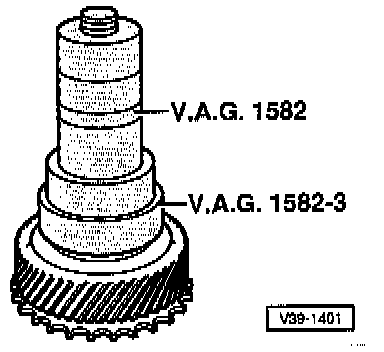
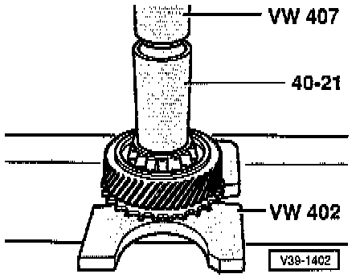
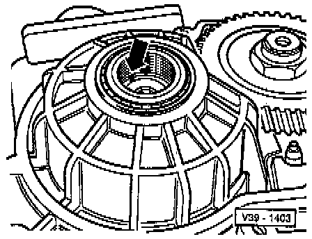

Input Gear

COMPONENT NOTES AND INFORMATION
NOTE: Drive pinion and differential do not need to be removed.
1 Socket-head fastener,
- Tighten to: 250 Nm (184 ft lb)
- Engage parking lock to remove and install
- Use 22 mm hex socket
- Before installing socket-head fastener insert axial needle bearing (item 7)
2 Dished washer
- Curved side faces socket-head fastener
3 Shim
- Determining thickness
- Adjusting input gear. Adjustments
4 Tapered roller bearing inner race
- After measuring thickness of shim, install on input gear with suitable locking fluid, refer to Fig. 3, below.
5 Tapered roller bearing outer race
- Drive out with drift
- Drive in with 30-205
- Insert with suitable locking fluid
6 Transmission housing
7 Axial needle bearing
- Install with flat side facing input gear
- Insert into input gear before installing Socket-head fastener (item 1)
8 Tapered roller bearing outer race
- Drive out with drift
- Drive in with 30-205 and appropriately long drift
- Insert with suitable locking fluid
9 Tapered roller bearing inner race
- Pulling off, refer to Fig. 1, below.
- Pressing on, refer to Fig. 2, below.
- Insert with suitable locking fluid, refer to Fig. 3, below.
10 Input gear
- With impulse wheel for Vehicle Speed Sensor
- Number of teeth. Application and ID
- Adjusting. Adjustments
- If signs of damage exist, always replace input gear and output gear together
- Removing, refer to Fig. 4, below.
NOTE: If input gear is replaced, adjust planet carrier. Adjustments
PROCEDURES

Fig. 1 Tapered roller bearing inner race, pulling off
- Place press piece on input gear.

Fig. 2 Tapered roller bearing inner race, pressing on
NOTE: A press piece must be placed below the hub of the input gear to avoid damaging the input gear

Fig. 3 Tapered roller bearing inner race, installing
- Install tapered roller bearing inner race suitable locking fluid.

Fig. 4 Input gear, removing
- Install socket-head fastener without dished washer, shim and axial needle bearing far enough for a gap, size a = 3 mm, to exist between socket-head fastener and tapered roller bearing inner race.
- Drive out input gear with VW 771 as far as the stop of the tapered roller bearing inner race.
- Remove VW 771 and take out input gear.